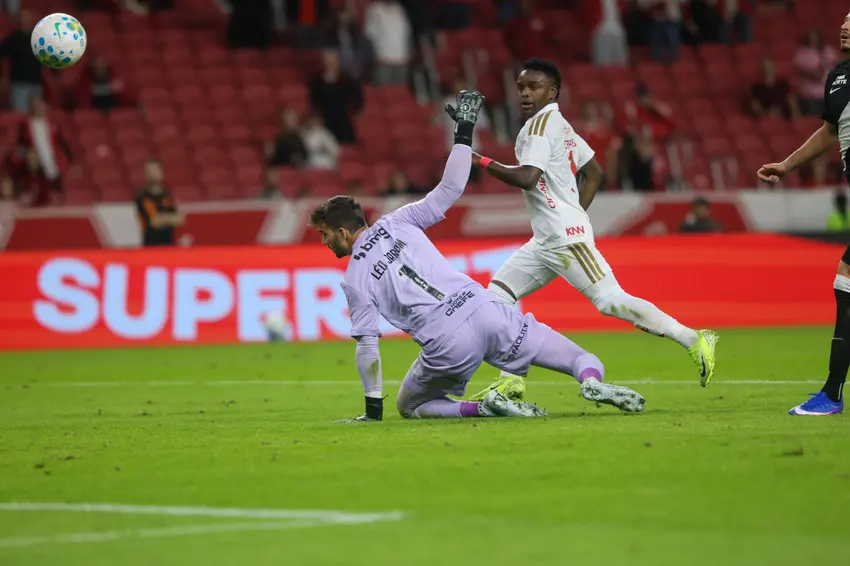

Internacional domina o Vasco e aplica goleada no Beira-Rio
Em noite inspirada, o Colorado constrói vitória sólida e se fortalece na competição.

O Internacional viveu uma de suas melhores atuações no Campeonato Brasileiro ao derrotar o Vasco por 4 a 1 no Beira-Rio diante de mais de 40 mil torcedores. Com intensidade ofensiva e controle total da partida, o Colorado construiu a vitória ainda no primeiro tempo e não deu chances para reação carioca. A equipe comandada por Eduardo Coudet começou pressionando desde os minutos iniciais, explorando velocidade pelos lados do campo e forte presença ofensiva no meio-campo. O primeiro gol saiu após boa troca de passes envolvendo Alan Patrick e Carbonero, que encontrou espaço para abrir o placar. Mesmo tentando equilibrar a posse de bola, o Vasco sofreu para conter a pressão colorada. Os erros defensivos e a dificuldade na marcação deram liberdade ao Internacional, que ampliou rapidamente com Alerrandro após cruzamento vindo da direita. O Vasco ainda conseguiu diminuir antes do intervalo em jogada de bola parada, reacendendo momentaneamente a esperança da equipe carioca na partida.

Na segunda etapa, o Internacional manteve o ritmo forte e voltou a dominar completamente o confronto. Com maior organização tática e intensidade física, o time gaúcho controlou o meio-campo e criou diversas oportunidades de ampliar o marcador. Bernabei marcou o terceiro gol colorado em finalização precisa após sobra dentro da área, aumentando ainda mais a pressão sobre o Vasco. Pouco depois, Carbonero voltou a aparecer como destaque ao participar da jogada que resultou no quarto gol da equipe gaúcha. Sem conseguir reagir ofensivamente, o Vasco encontrou dificuldades para criar chances claras e passou grande parte do segundo tempo tentando evitar uma goleada ainda maior. A torcida cruzmaltina demonstrou insatisfação com o desempenho defensivo da equipe. A vitória por 4 a 1 fortalece o momento do Internacional no Brasileirão e aproxima o clube da disputa pelas primeiras posições da tabela. Já o Vasco aumenta a pressão interna e segue buscando recuperação para se afastar da parte inferior da classificação.